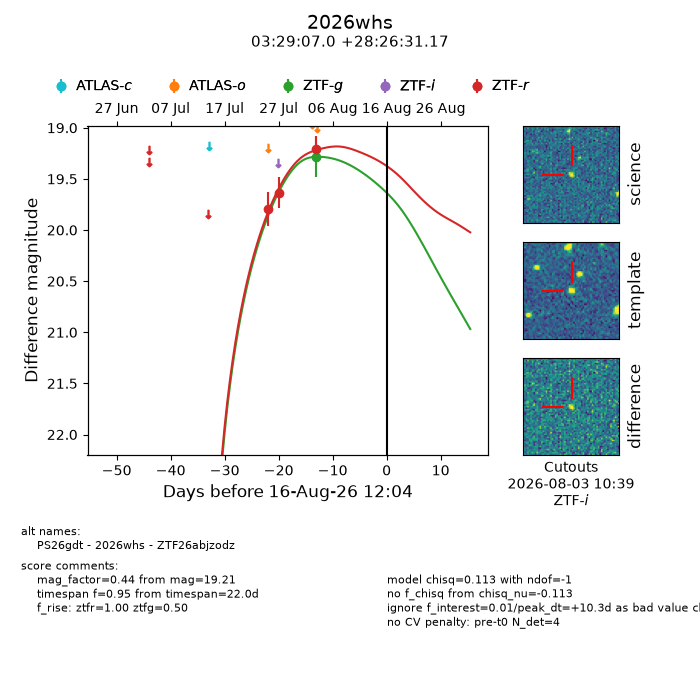
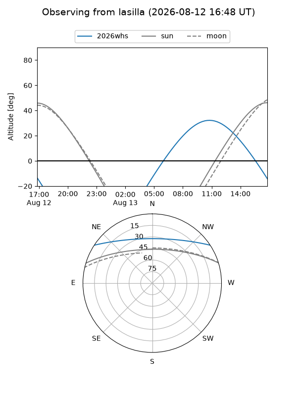
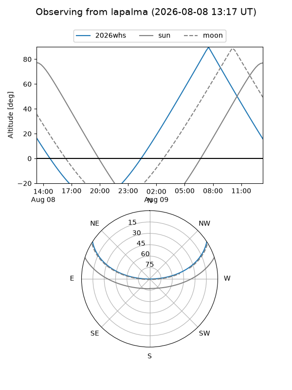
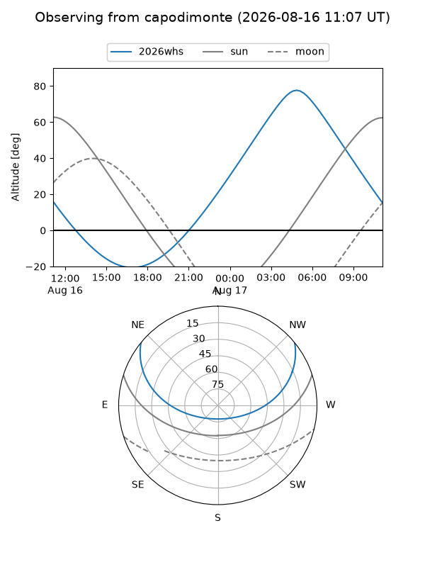
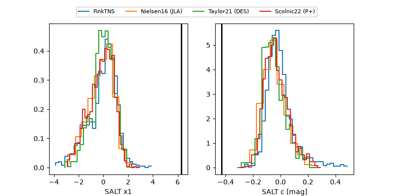

2026whs
Target 2026whs at 2026-08-16 12:07
Aliases and brokers:
FINK-ZTF: ztf.fink-portal.org/ZTF26abjzodz
Lasair-ZTF: lasair-ztf.lsst.ac.uk/objects/ZTF26abjzodz
ALeRCE-ZTF: alerce.online/object/ZTF26abjzodz
YSE-PZ: ziggy.ucolick.org/yse/transient_detail/2026whs
TNS name: wis-tns.org/object/2026whs
Direct TNS query: direct search
alt names
ZTF26abjzodz (ztf,fink_ztf)
2026whs (tns,yse)
PS26gdt (panstarrs)
Coordinates:
equatorial (ra, dec) = 52.2790,+28.44199
equatorial (HMS+DMS) = 03:29:06.95,+28:26:31.17
galactic (l, b) = (160.2066,-22.79128)
Flags:
TNS type: nan
peak dt: +10.3
Photometry:
last ztfg=19.28, ztfr=19.21
1 ztfg, 3 ztfr detections
Lightcurve

Visibility



Additional plots
